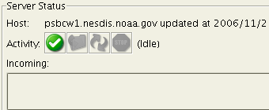

CoastWatch Status Tool Help: Server activity
The server status panel below allows you to monitor server
activity:

The following information is displayed:
- Host
- Shows the server host name and last known status update
time. The server is queried once every minute to determine the
current status, activity, files, and online data.
- Activity
- Indicates the server activity using several icons and an
activity message: The icons are colorized when the
corresponding activity is being performed. The icons denote
(left to right) server idle, receiving data files, processing
data, and error. The error icon indicates that the server
cannot be contacted for a status update.
- Incoming
- Shows a list of data files currently being received. Data
files are retrieved by the server from a number of foreign
hosts and take time to be completely transferred.
- Waiting
- Shows a list of data files currently waiting to be
processed. These data files have been recently transferred
from a foreign host but have not been through the data
processing cycle.
You can change the server being monitored using the File|New server menu item. Once you enter the
new server name or IP address and click OK, there may be a small delay while the
program retrieves the status and online data from the new
server.
Back to overview